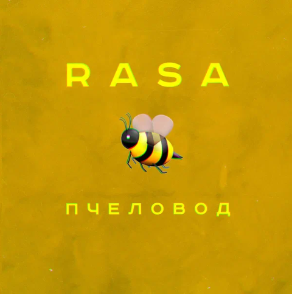

Хип-хоп
Хип-хоп — культурное движение, зародившееся в начале 1970-х годов в Южном Бронксе, Нью-Йорк, в афроамериканской и латиноамериканской общинах. Он включает в себя такие элементы, как рэп (ритмичная речитация), диджеинг, брейк-данс, граффити и битбоксинг. Хип-хоп — это не просто музыка, это образ жизни, выражающий социальные и политические взгляды.
История хип-хопа
Хип-хоп возник на уличных вечеринках, где диджеи играли фанк и соул. DJ Kool Herc считается одним из основателей хип-хопа, он разработал технику "Merry-Go-Round". С развитием хип-хопа появились MC, которые начали читать рифмованные тексты под музыку. В 1980-х годах хип-хоп стал набирать популярность и распространяться по всему миру.
Элементы хип-хопа
- Рэп
- Диджеинг
- Брейк-данс
- Граффити
- Битбоксинг
Известные хип-хоп исполнители
- Morgenstern
- Каспийский груз
- MiyaGi & Эндшпиль
- HammAli & Navai
- Rasa
- Anacondaz
- Макс Корж
Рекомендуемые альбомы

Пчеловод
Rasa
I got love
Miyagi & Эндшпиль, Рем Дигга